遊びで植物を育てよう
2025/07/19
2月にしたブラックベリーの挿し木を植え替えしました。
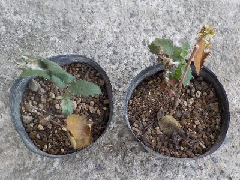
密閉挿しを長期間放置してました。暑さでダメになった挿し木もあったかもしれないです。
生き残った2本をポットに植え替えしました。涼しくなるまで反日陰に置いておくつもりです。
【ブラックベリーTOP】
【果物TOP】
【園芸TOP】
2025/07/05
ブラックベリーの収穫をしましたが、ジャム作りが面倒だな。
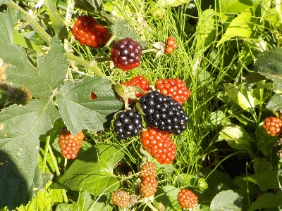
出来上がったジャムを食べるのは好きなんですが、コトコト煮込んでジャムを作るのが面倒なんですよね。タネを取り除く作業もあるし。
生で食べればいいんでしょうけど、生だと固いタネが気になって嫌なんですよね。
植えてあるブラックベリーの量を減らそうかな。
【ブラックベリーTOP】
【果物TOP】
【園芸TOP】
2025/02/16
ペットボトルでブラックベリーの密閉刺しをしました。
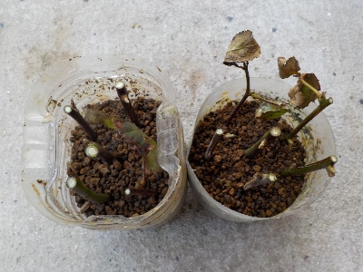
ブラックベリーの位置を変える予定です。移植が失敗してもいいように挿し木をしました。
2月で寒いのでペットボトルを使って密閉刺しにしました。これで冬を乗り越えれるんじゃないかな。
【ブラックベリーTOP】
【果物TOP】
【園芸TOP】
2024/08/03
日向のブラックベリーは収穫が終了しました。
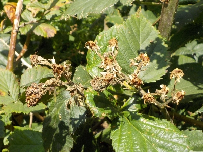
日当たりのいい場所のブラックベリーは収穫が終わりました。
今日は日陰にあるものだけ収穫しました。日陰も夏の暑さで水分不足になっているので、たぶん実はもう大きくならないでしょう。
今日が今季最後の収穫だな。
【ブラックベリーTOP】
【果物TOP】
【園芸TOP】
2024/07/20
ブラックベリーに緑色のカメムシがいっぱいいます。
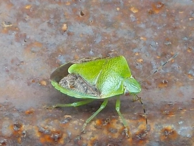
チャバネアオカメムシです。
近づくと危険を察知して飛びます。飛んで遠くに行ってくれれば何も問題ないですが、近くに寄って来ることがあるのでやっかいな虫です。
【ブラックベリーTOP】
【果物TOP】
【園芸TOP】
2024/07/15
ブラックベリージャムを作ります。
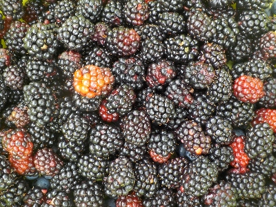
大量に収穫出来たのでジャム作りをします。
毎年何度も作っているのでジャム作りが慣れました。
同じことをし続けるのはどうかなー。違うことを考えた方がいいんだろうな。
【ブラックベリーTOP】
【果物TOP】
【園芸TOP】
2024/06/29
ブラックベリーを生で食べました。
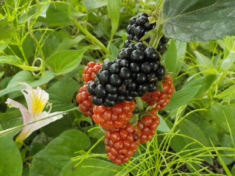
いつもはジャムにして食べるんですが、収穫が少なくてジャムを作る程の量がないです。
なので生でそのまま食べました。甘くて、ちょっと酸っぱい。タネの固いのがチョット気になる。
少量をたまに食べるんなら生でもいけど、そうじゃないならジャムの方が美味しくていいな。
【ブラックベリーTOP】
【果物TOP】
【園芸TOP】
2023/07/22
ブラックベリーが沢山採れたのでゼリーが作れます。
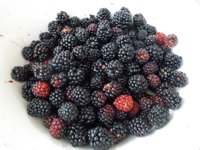
先週は少なかったですが、今回は多く採れたのでブラックベリーのゼリーが作れそうです。
ジャムでもいいんですが、ゼリーの方が単体で気軽に食べれていいです。夏ですしね。
【ブラックベリーTOP】
【果物TOP】
【園芸TOP】
2023/07/16
今年初のブラックベリーの収獲です。
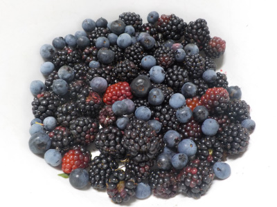
今日の収獲は量が少なかったので、一緒にブルーベリーも収獲しました。
2種類混ざっていると、なんとなく美味しそうに見えました。
【ブラックベリーTOP】
【果物TOP】
【園芸TOP】
2023/05/28
今頃ブラックベリーの剪定と誘引をしました。
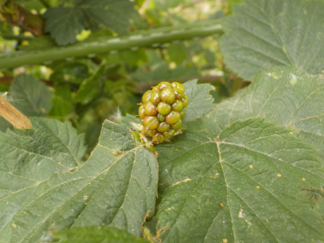
既に実が出来ていますが、冬に剪定と誘引をするのを忘れていたので今日しました。
さぼった分、今年の収穫は少なそうです。枝も花も少ないです。
【ブラックベリーTOP】
【果物TOP】
【園芸TOP】
2022/07/24
ブラックベリーはそろそろ終わりかも。
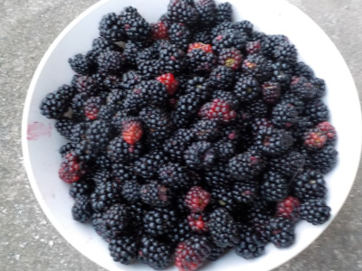
本日の収穫です。
また実は沢山あるんですが、猛暑になったので実が水分不足で固くなってきました。
天気予報ではしばらく高温が続くようなので、収獲が減ると思います。
【ブラックベリーTOP】
【果物TOP】
【園芸TOP】
2022/07/24
今日のブラックベリーの収獲。
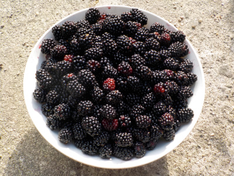
もう冷凍庫には沢山ストックしたので、これから収獲したものはドンドン食べるつもりです。
しっかり煮詰めて、砂糖少なめのジャムを作ります。
量を多く食べるので、普通にジャムを作ったら糖分の摂取過剰になります。
【ブラックベリーTOP】
【果物TOP】
【園芸TOP】
2022/07/17
ブラックベリー大量収獲です。
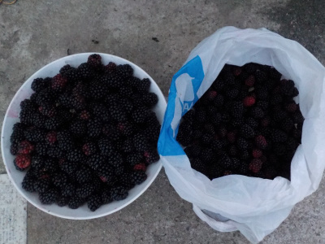
ボール1杯で収まらない量の収獲でした。
過去最高の量です。
家にある大鍋でグツグツ煮詰めてジャムを作りました。
冷凍庫に空きがないので、他の冷凍食品をドンドン食べて隙間を作ろうと思っています。
【ブラックベリーTOP】
【果物TOP】
【園芸TOP】
2022/07/13
次々とブラックベリーが黒くなっているので収獲しました。
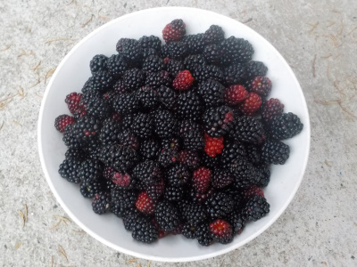
前回収獲してから3日しか経っていませんが、沢山熟れていたので収獲しました。
冷凍庫にジャムが溜まっていきます。
【ブラックベリーTOP】
【果物TOP】
【園芸TOP】
2022/07/10
ブラックベリーの収獲をしていたら蜂に噛まれました。
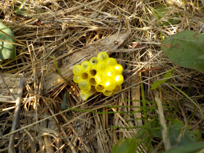
ブラックベリーに蜂の巣があるのを気付かずに収獲していたら、蜂に手を噛まれました。
手袋をしていたおかげか、刺されなくて良かったです。
危険なので殺虫剤を使って取り外しました。
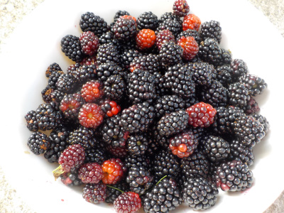
本日の収獲です。ジャムが沢山出来るので、食パンとヨーグルトを常備することにしました。
【ブラックベリーTOP】
【果物TOP】
【園芸TOP】
2022/07/05
ブラックベリーの収獲スタートです。
2022/05/29
今年はブラックベリーが沢山食べれそうです。
2022/05/05
ブラックベリーの花が咲いていました。
2021/11/28
ブラックベリーの挿し木が成功しました。
2021/07/31
今期のブラックベリーの収獲は今日でおしまい。
2021/07/13
今日もブラックベリーを冷凍しました。
2021/07/10
今日のブラックベリーの収獲はちょっとでした。
2021/07/03
ブラックベリーの実が沢山出来たので収穫しました。
2021/06/20
ブラックベリーの収獲はパスだな。
2021/05/02
ブラックベリーのフェンスを作り直しました。
【ブラックベリーTOP】
【果物TOP】
【園芸TOP】
過去の記事
2020/07/12
ブラックベリージャムを作りました。
2020/06/28
来週からはブラックベリーのスイーツ作りです。
2020/05/17
ブラックベリーにもカミキリがいた。
2019/07/13
ブラックベリーのジャムを作りました。
2019/06/02
ブラックベリーが沢山食べれそうです。
2018/07/21
ブラックベリーに毛虫大量発生中。
2018/07/01
ブラックベリーの収穫スタートです。
2018/03/11
ブラックベリーの柵を作りました。
2017/07/02
ブラックベリーを収穫しました。
2017/05/14
日当たりのいい場所のブラックベリーの花が咲きました。
【ブラックベリーTOP】
【果物TOP】
【園芸TOP】
2016/07/23
この頃毎週こんな感じです。
2016/07/03
ブラックベリーが採れ始めました。
2016/05/01
ブラックベリーに蕾が沢山付いています。
2016/01/31
ブラックベリーを誘引しました。
2015/07/11
ブラックベリーの収獲が始まりました。
【ブラックベリーTOP】
【果物TOP】
【園芸TOP】
2015/06/28
ブラックベリーを食べました。
2015/05/31
去年挿し木したブラックベリーに花が付きました。
2015/05/03
ブラックベリーの蕾が出来てます。
2015/03/15
ブラックベリーの芽が大きくなってきました。
2014/08/02
ブラックベリーために草抜きをしました。
【ブラックベリーTOP】
【果物TOP】
【園芸TOP】
2014/07/19
ブラックベリーの害虫。
2014/07/12
ブラックベリーを沢山収穫しました。
2014/07/06
ブラックベリーが黒くなってきました。
2014/06/15
挿し木のブラックベリーを地植えにしました。
2014/05/03
ブラックベリーの挿し木の結果
【ブラックベリーTOP】
【果物TOP】
【園芸TOP】
2014/04/06
ブラックベリーの挿し木から芽が出ました。
2014/02/16
ブラックベリーを挿してみました。
2013/08/10
ブラックベリーはそろそろ終わり。
2013/07/21
ブラックベリーを収穫しました。
2013/06/02
ブラックベリーの花が咲きました。
【ブラックベリーTOP】
【果物TOP】
【園芸TOP】
巨大化に注意しましょう。
【おいしいものを食べよう。】【たくさん寝よう。】
【ソロ活をしよう!】【季節感のあることをしよう。】【動画視聴はほどほどに。】【当サイトの全てのコンテンツは無断転載禁止です。】